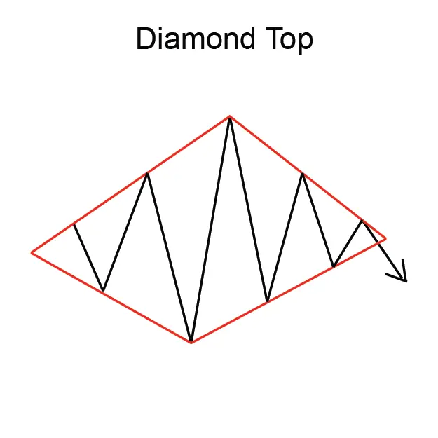
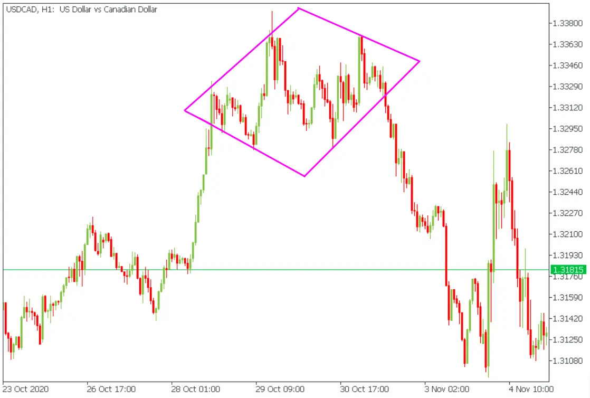

mplicación
Un Diamond Top se considera una señal de baja, indicando una posible reversión de
la tendencia ascendente actual a una nueva tendencia descendente.
Descripción
Los patrones de diamantes generalmente se
forman durante varios meses en mercados muy
activos. El volumen permanece alto durante la formación de este patrón.
El Diamond Top indica una reversión a una tendencia descendente.
El patrón Diamond Top ocurre porque los precios crean altos más altos y bajos más bajos
en un patrón de ampliación. Luego, el rango de negociación se estrecha gradualmente
después de que los altos alcancen el pico y los bajos comienzan a tendir hacia arriba.
El Evento Técnico ocurre cuando los precios se rompen hacia abajo fuera de la formación de diamantes.

Consideraciones de negociación
Duración del patrón
Considere la duración del patrón y su relación con sus horizontes de tiempo de negociación.
La duración del patrón se considera como un indicador de la duración de la influencia de este patrón.
Cuanto más largo sea el patrón, más tiempo tardará en que el precio se mueva a su meta.
Cuanto más corto sea el patrón, más rápido será el movimiento del precio. Si está considerando
una oportunidad de comercio a corto plazo, busque un patrón con una duración corta.
Si está considerando una oportunidad de comercio a largo plazo, busque un patrón con
una duración más larga.
Precio objetivo
El precio objetivo proporciona una importante indicación sobre el movimiento potencial de
los precios que este patrón indica. Considere si el precio objetivo para este patrón es
suficiente para proporcionar rendimientos adecuados después de que sus costos (como comisiones)
se hayan tenido en cuenta. Una buena regla es que el precio objetivo debe indicar un retorno
potencial de más del 5% antes de que un patrón se considere útil. Sin embargo,
debe tener en cuenta el precio actual y el volumen de acciones que tiene la intención de negociar.
También, compruebe que el precio objetivo ya no se ha alcanzado.
Tendencia de entrada
La tendencia de entrada es una característica importante del patrón. Una tendencia de entrada
superficial puede indicar un período de consolidación antes de que comience el movimiento
de los precios indicado por el patrón. Busque una tendencia de entrada que sea más larga
que la duración del patrón. Una buena regla es que la tendencia de entrada debe ser al
menos 2 veces la duración del patrón.
Criterios que respaldan
Apoyo y resistencia
El apoyo se encuentra en el punto de inflexión de las bajas y la resistencia en la cima del Diamante.
Media móvil
Espere que la media móvil de 200 días se aplane. A continuación, vigile para que la media móvil de
50 días se cruce por debajo de la Media móvil de 200 días. Esto debería señalar la brecha.
Criterios que refuten
No hay volumen
La falta de un volumen en todo el patrón es una indicación de que este patrón puede no ser fiable.
Tendencia de entrada corta
Una tendencia de entrada que es significativamente más corta que la duración del patrón es una
indicación de que este patrón debe considerarse menos confiable.
Ejemplo de gráfico en vivo:
